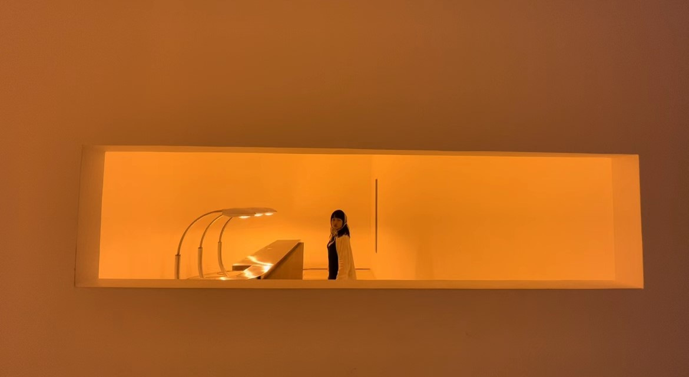
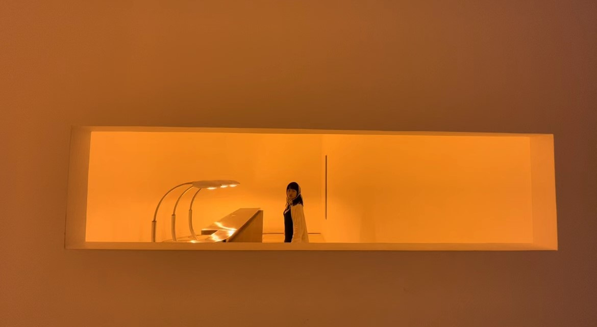

蒲槿的24岁
写于2023/01/25
追逐着日出与日落的24岁
24岁是被困在北京城的一年，日出和日落象征着我所期盼的我所渴望的一切，在城市之外的，在工作之外的，一切。
年终总结视频
关于
剪报时间范围为2021/10/28~2022/10/27，这一年开始步入和适应职场，这一年因为疫情和工作原因没有能够常出京和回家，这一年朋友都还在北京常聚，这一年开始学习House/Dancehall/架子鼓，这一年我规划的很多实现的很少。
【北京】古北水镇/环球影城/怀柔雁栖湖/红螺寺/青龙峡/东郊民巷/人大老校区/北京野生动物园、南山滑雪场/军都山滑雪场/后海滑冰场、Temple东景缘瑜伽和日落展、八大处/奥体公园/朝阳公园/天坛公园/冰丝带...
【其他】河北秦皇岛阿那亚
注释：素材由微信朋友圈、Instagram、日常记录等整理而来，或无法还原当时的真实情况和心境，只能尽最大努力总结
大概算是随笔
（一）
被梁永安先生的《阅读、游历和爱情》所触动。我们所处的时代是那么的独一无二，历史上任何一个时期都无法作为借鉴。因此我们面临的问题需要我们这代人自己去摸索，没有人知道答案。这本书全篇文笔积极且与时代共情，让我突然产生了莫大的勇气和人类责任感，于是写下了下面这篇：
停在家乡河流的入海口
它是有点害怕的
它一定也不是最博闻强识的那一只
也没有谁可以告诉它海里有什么
但是这可是海洋诶
于是它一头猛扎进水里
它笨拙的扭动着还不太熟练的姿势
有时候会在海草里挣扎很久
有时候会跟着鱼群绕圈躲避捕食者
它只希望有一天能造出自己的一片浪
故事的结尾
它好像还是没有成功 没有人听说过它的故事
可是我又分明见过它
在很多次日出日落 探出头开心的笑着
2022/06/05
（二）
我很怕自己没有来得及过好这一生
然后会很急切地想要去做到什么事情
就像再也不会有机会一样
然后我又会担心自己会不会因为太急切
反而没有去好好过好这一生
唯物主义和相对论告诉我们，在余下的漫长生命中，再也不可能重复和刚刚完全一样的体验
"我始终在路上，没有得过且过，当生命走向尾声，我也原谅自己，告诉我自己，我已尽力，就到这里吧......"
2022/06/12
读《遗愿清单》后
（三）
我要
热烈真挚，从容优雅
2022/07/12
读《成年人的哲学指南》后
（四）
回忆以及与世界的联结 很重要
没有回忆的人 天天感觉活在梦境里
一个故事没有前没有后
自己明明存在着
但自己和这个世界好像没有什么关系
突然懂了盗梦空间里人的感受
直到有一天 一个熟悉的事/物/人拍了拍我的肩膀
我才忽然回到了真实的世界
今天有人和我说
“秋天天气转凉的时候，会有一种熟悉的感觉，每年都会有，就像是在时空穿越”
我非常羡慕这种超能力
不知道我的陀螺会藏在哪里
会在秋天转凉第一天的风里 还是会在重庆的山里雾里 还是会在妈妈的怀里
我好像还在做梦
我还在找我的陀螺
2022/08/15
隔天将矫情幼稚小作文给妈妈看，妈妈说“信我吧，在每一层你都有爱有理想有自由”
（五）
老年蒲槿护工照顾指南 (健康版)
（Ⅰ）蒲槿的刘海需要保留，希望能修剪在眉毛稍微往上的位置
（Ⅱ）每天随时随刻最好有音乐放着，很重要
（Ⅲ）如果我有幸晚年住在了海边，天气好的时候带我去海边吹吹风吧
（Ⅳ）每天帮我拍一张好看的照片吧，我可以发给我子女看- 小视频也可以，我还会拍视频剪视频呢
（Ⅴ）街舞怕是跳不太动了，但是可以陪我学学交谊舞，年轻的时候嫌太无聊了没学，现在我刚好有大把的时间来学习
（Ⅵ）希望那个时候我架子鼓已经几十年学成了，让我偶尔能叛逆的打几下消消遣吧
（Ⅶ）我自己能做的事情就让我自己做吧，不想生活质量下降的太快，但是我做不到的还请麻烦你了
（Ⅷ）如果我有天特别难过，觉得自己变老变弱的好快，你多夸夸我，告诉我是一个可爱优雅的老奶奶
（Ⅸ）如果你有什么困惑或者想知道的也可以和我说，我好歹多活了几十年，不能给你建议，但是能分享我的所见所闻
（Ⅹ）感谢啦～
2022/11/17（编者按：不属于24岁范畴，但是所思考的事情类似，因此编入24岁剪报中）
读《最好的告别》后
河北秦皇岛阿那亚独自旅行
年度照片


 

生活碎碎念节选
2021/11/04
生活
昨天和曾经一起自主招生的高中同学吃饭，当聊起来高中我们一起经历的事情时，我竟然一点印象都没有！这几年越发觉得自己边活边忘，所以才开始疯狂vlog和ig。就担心以后老了，我没有故事可以分享，我不会是一个有趣的老太太了！！！（编者按：原来一切可以追溯到2021年）
2021/12/29
工作
最喜欢和同事一起聊天的时光，以及我有猫了！
2022/2/19
朋友
星星春节假期后从内蒙回来借住我家，正逢内蒙古疫情爆发，于是我喜提第一次居家隔离。
1. 医护人员上门采集核酸时，还取了环境样本，那个时候邻居都害怕极了
2. 医护人员取环境样本时，星星发现我还在默默拍视频记录，星星捂脸说”不愧是你“
2022/3/15
生活
长安街的花儿开了
2022/3/29
工作
果然人对我来说是最重要的，我对我司的人都超级喜欢。从上周到这周，下班后闲聊的时光最开心，别的不说，至少又快乐地度过了一年
2022/5/1
生活
今天的晚霞超级好看，是紫色的。紫色的云朵像是立体的实实在在的天空泡沫艺术品，我们有一瞬间感觉在另一个童话世界里（编者按：忘记和谁一起看的了）
2022/5/11
工作
记录一下因为疫情而AB岗，今天只有我和E老师主持客户会议的刺激的一天
2022/6/23
朋友
论”朋友是蒲槿最大灵感和动力来源之一“
和鸭鸭日常分享对行业/工作/恋爱/生活的想法，让我只想明白30%的东西，在讨论中逐步清晰到60%。以后老了我们可以出一本书叫做《歪理邪说一本通》
和星星/小飞/惠钧分享近期做的重大决定，被朋友所激励，想把自己已经想了很久的事情做起来。我的朋友正在勇敢地开拓新的方向，这是多么令人兴奋的事情（编者按：但是年底我就在北京少了一位能常聚的朋友，多了一位在远方努力勇敢的自媒体工作者）
2022/7/7
家人
久违地和爸爸深夜电话聊了两个小时，平时都不会主动联系。看到他来电时，我有惊讶，也意识到某个转折点会不会要来了。我曾经觉得他是一个很容易看透却很难理解的怪人，这次我都不需要说话，只需要听他地自夸也好/倾诉也好/遗憾也罢，他看开了很多，也多了很多不理解，他需要表达。
“蒲槿，我喜欢这个东西你知道吗？我很喜欢。”
”关于这件事，我也花了很久时间走出来，我以为我还有很多时间。“
我还是很难评价他，我一直很钦佩他，一辈子只为了实现自己的野心和想法；我也一直很埋怨他，因为家人，因为争执。但是无论如何祝愿我们都能好好的过这一生，不留遗憾
2022/10/10
生活
I FEEL. I THINK. I LOVE.（编者按：这句话一度成为我24岁的座右铭）
2021/11/28
朋友
”人是会变的，但是没关系，一直陪伴的人会知道原因。“（星星）
那我超喜欢你们，你们一定知道原因
2022/1/13
朋友
李玮瑄说，要在我30岁生孩子之前能够赚足钱辞职环球旅行。
一周后，我难过时找到李玮瑄，她说她在一边洗澡一边回复我的微信。“这不是你说你难过了，我觉得我义不容辞吗？我希望你快乐，我希望你得偿所愿。” (编者按：李玮瑄居然说过这么肉麻的话！)
2022/2/25
生活
那段时间好像很难过，可能是身体不太舒服抑或是其他的...
02/25：一切都很朦胧，我感觉我在一个梦里，一个很嘈杂很热闹的梦。身体也很疲惫，好像在现实，又好像不在（编者按：大概是在形容远程听开会）
02/27：我的难过体现在，那一天我会特别想看日落 看月升。然后我意识到，我好像其实一直很难过（编者按：疫情期间一直被限制无法出京）
2022/3/18
生活
就在刚刚某一瞬间，我感觉我对深圳的执念没有了。随便吧，哪儿都行，找片海边/山里/森林/星空，就这么住下吧
2022/4/14
生活
上海四月之声。
最近在社交媒体听了/看了太多来自上海的声音，这个世界真的太“荒谬”了，最近不知道和朋友说这个词说了多少次。经常感觉有一股酸意从鼻子延伸至大脑，好像有泪水想夺眶，但最后只有脑子麻麻的，喉咙发紧，心也缩紧，比如现在
2022/6/2
生活
星际穿越成为心中最佳电影之一。
“时间在这里是以实体形式存在，一个进化到超越我们已知的四维空间的人类文明”
“我们就是孩子们以后的回忆了，爱是我们唯一能感知的超越时空维度的存在”
2022/6/2
生活
投影仪让我实现了电影综艺电视剧比赛自由！（编者按：24岁下半年的快乐很多是由拥有一台投影仪开始的）
2022/7/16
生活
《霍金沉思录》
“我认为当我们死的时候，我们会回到尘埃。我们拥有这一生，得以欣赏宇宙的宏伟设计，为此我极度感恩。”
2022/8/21
生活
最近的天空很像黄金矿工，想要拥有一台挖矿机，把云朵都抓进口袋
2022/10/18
生活
《怪奇物语》
“继续长大吧孩子，别让我拦着你。犯错，然后吸取教训。如果生活伤害了你，因为那是肯定会的，记住那种痛苦，那是好事，那意味着你走出了洞”（编者按：悲伤和快乐给我以同等的力量）
2021/12/21
工作
通过试用期啦！！！
2021/2/6
生活
人生第一次搓澡哈哈哈哈哈
2022/3/6
朋友
我：如果不是为了陪你们，我是不会看这种一看电影名字就知道会把我惹哭的电影——奇迹笨小孩
我：所以你们知道我们要去哪里吗？我们已经漫无目的地从海淀溜达到西城了。
星星/小飞/惠钧：不知道！（理直气壮）
我：我这辈子都很难讨厌你们了吧，我们一起经历的一切都让你们对我很特殊很珍贵
那天我们四人追溯了大学期间如何熟悉起来的，一切都源于我想要一个占座儿，从此衍生出一个LED宇宙（编者按：爆哭）
2022/3/21
生活
东航波音737客机从昆明飞往广州途中失事。
每天这个世界都在提醒我，做想做的事，看想看的风景，陪伴重要的人
2022/4/29
家人
最近忙到一周都没有和妈咪通话了。今天终于有了时间，在出租车上和妈咪通话
听着妈咪在这一头说着家长里短和最近的变化，看着窗外的青绿和暖阳，懒洋洋的，很幸福
突然意识到并不是抽不出时间打电话，只是情绪偶尔会累/思绪无法抽离出工作，每天24小时中真正完整有效的属于自己的时间好像比想象中的还要少（编者按：职场小白的醒悟，后来慢慢学会了分离工作和生活）
2022/6/4
朋友
和狗子叽叽的一些机智对话。
我：我以为今天才是端午节，没想到是昨天，我还专门把粽子留到了今天。
叽：我们可以配合你今天再过一次！
狗：我还有一个粽子没吃完，我把它叫出来演戏！
狗：暗恋中的女人一般喜欢吃啥？
我：吃爱情的苦果（编者按：如此想来，那时应该正在吃着）
2022/6/29
生活
好像要开始新的篇章了。终于某些事情得到了答案，画上了句号，不用再反复纠结
今天也是被朋友们笑死的一天，抓起电话就给我打过来开骂，还得我一个个劝阻（编者按：纪念一次crush，不过真正走出来所花费的时间比想象的要久很多，倒是很出乎我的意料）
2022/9/27
生活
风好大呀，在空中盘旋了好久，什么时候降落呀（编者按：据我所知24岁这一年都没有飞机出行，此处应该是比喻）
2022/10/9
工作
因为和同事（茵茵，CY，明明）吃sidestreet骑自行车逆行而被开罚单。
警察：你们逆行了知道不，每个人警告一次
明明：因为20大要来了是不
警察：什么大都不行，从小到大都不行！
2022/10/20
生活
《蝲蛄吟唱的地方》（霍老师推荐）
“能够成为同潮汐一般确定的自然秩序的一部分已经足够了”
“我会把她藏入柏树，当死亡的脚步临近”